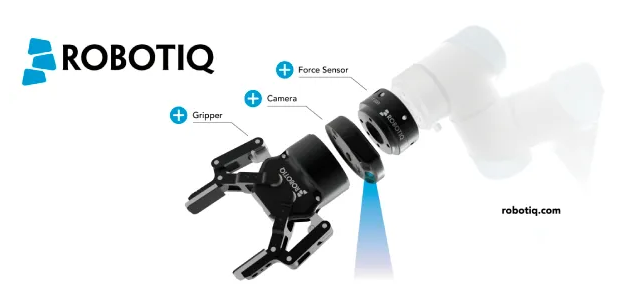
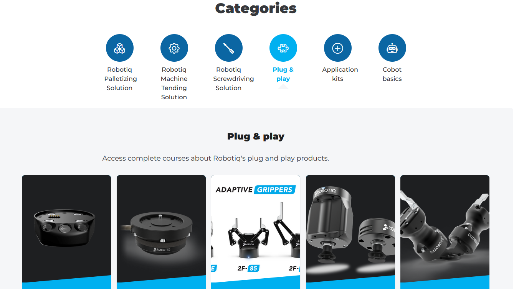
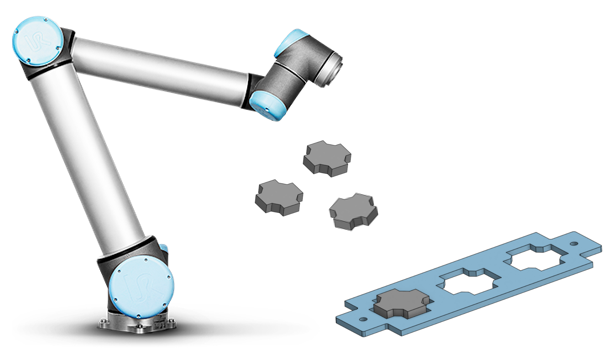

Travaux pratiques — programmation
Le cobot ne sait pas seul où sont les pièces : c'est la caméra de poignet qui les lui indique. Ce TP enchaîne la prise en main des préhenseurs — ventouse et pince deux doigts —, la calibration d'une nouvelle position de caméra, l'apprentissage de la pièce à reconnaître, puis l'écriture du programme de pick and place qui s'appuie dessus.
Les TP se font par groupe de 2 à 4 étudiants : la manipulation d'un robot ne se réalise jamais seul.
Avant de commencer : La partie sécurité doit être validée avant de débuter la prise en main du robot.
Le code doit être validé par l'enseignant avant toute exécution du programme sur la machine.
Les vidéos e-learning doivent être lancées sous Microsoft Edge, et non Firefox.
On cherchera dans ce TP à réaliser un pick and place avec reconnaissance des pièces par caméra.
Les robots UR sont équipés d'un capteur d'effort, d'une caméra, d'une pince 2 doigts ou d'un préhenseur à ventouse, et d'une interface I/O.


Identifier les différentes articulations, ainsi que l'orientation des repères base et outil.
Piloter le robot manuellement en mode articulaire et cartésien, afin de prendre connaissance des différents axes du robot. En mode cartésien, le robot peut être piloté suivant différents référentiels (world, base, outil, objet). Dans un premier temps, vous déplacerez le robot suivant les référentiels base et outil.

Affiner le comportement de la détection à l'aide des paramètres avancés de la caméra de poignet.
Les questions posées au fil du TP, dans l'ordre :